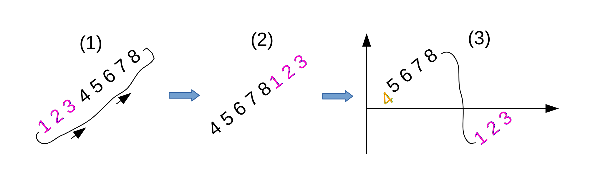
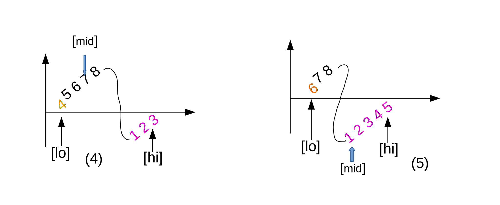

$\square$
Given a rotated sorted array, find the index of maximum of value of the array in $O(\log{n})$

After the rotation, there two partial array:[4 5 6 7] and [1 2 3],
We can create a picture from the two array [in figure (3)].
We try to use similar binary search algorithm which is as following
1. divide the array to two even parts,e.g. left and right
2. choose either left or right side of the array and do a recursive call
$\square$
Q. How do we know the maximum value is on the left or right side?

Find the middle element of the array
1. int mid = (lo + hi)/2;
2. compare arr[lo] and arr[mid]
if arr[lo] < arr[mid], we know the maximum value is between [mid] and [hi], [see figure (4)]
arr[lo] = 4 and arr[mid] = 7
otherwise, the maximum value is between [lo] and [mid], [see figure (5)]
arr[lo] = 6 and arr[mid] = 1
lo = 0, hi = 7
mid = (lo + hi)/2 = 3;
arr[lo] = 4, arr[mid] = 7;
arr[lo] < arr[mid]
the maximum value is in [mid] to [hi]
skeleton code
int findMaxIndex(int[][] arr, int lo, int li)
{
int mid = (lo + hi)/2;
if(arr[lo] < arr[mid])
return findMaxIndex(arr, mid, hi);
else
return findMaxIndex(arr, lo, mid);
}
there is one special case that we need to be considered
if the array does not rotate at all, e.g. [1, 2, 3, 4]
then we can just check
if([lo] < [hi])
the array does not rotate at all,
the index of maximum value is [hi]
// assume there is not duplicated number in the array
// find the index of maximum value in the rotated sorted array
public static int findMaxIndex(int[] arr, int lo, int hi) {
if(arr != null) {
if(arr[lo] < arr[hi] || lo == hi)
return hi;
else {
int mid = (lo + hi)/2;
if(arr[lo] < arr[mid])
return findMaxIndex(arr, mid, hi);
else
return findMaxIndex(arr, lo, mid);
}
}
return -1;
}